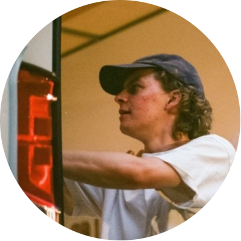
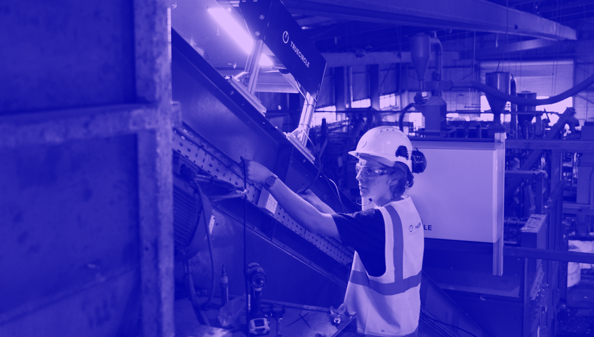
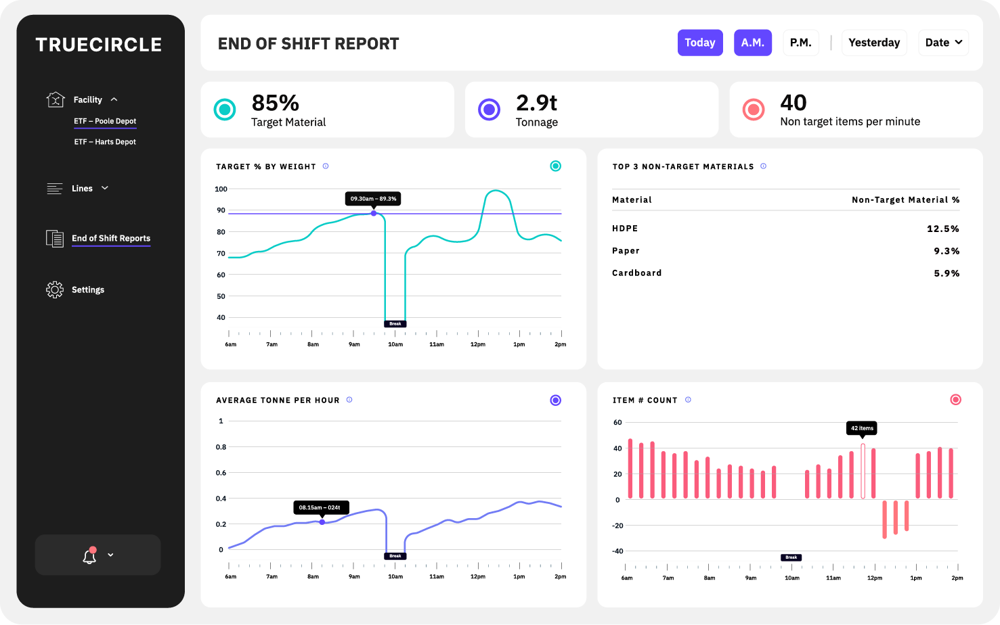
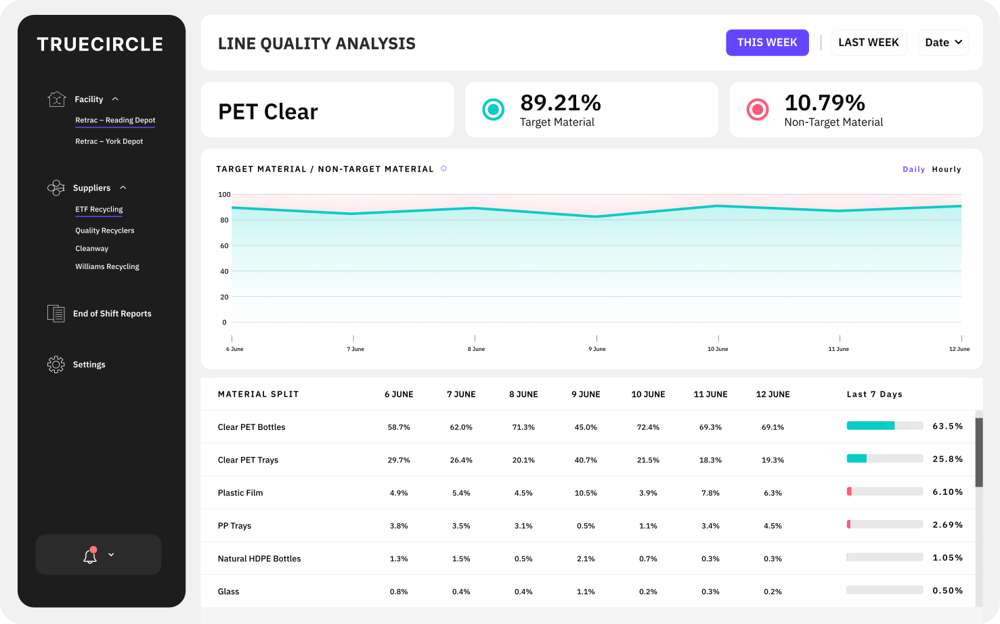
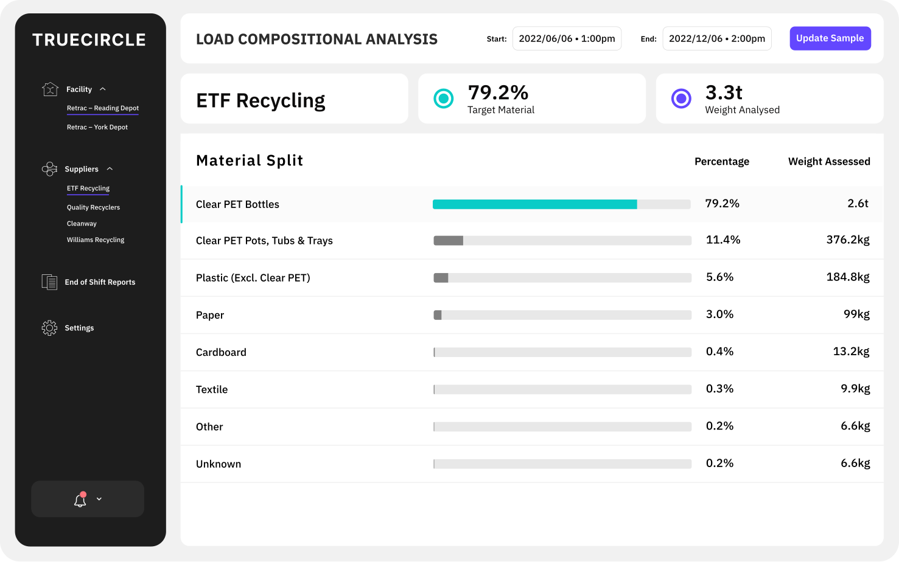
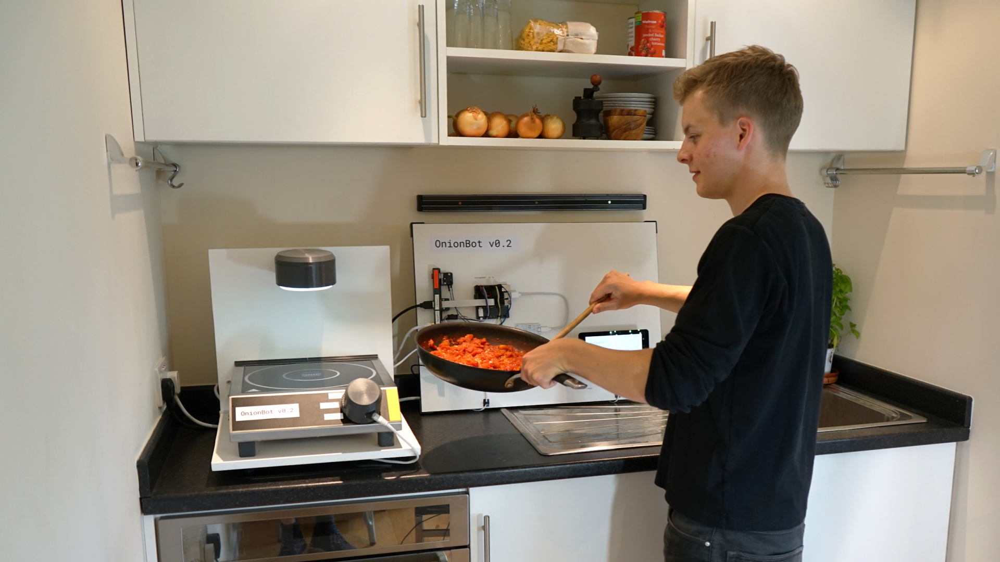
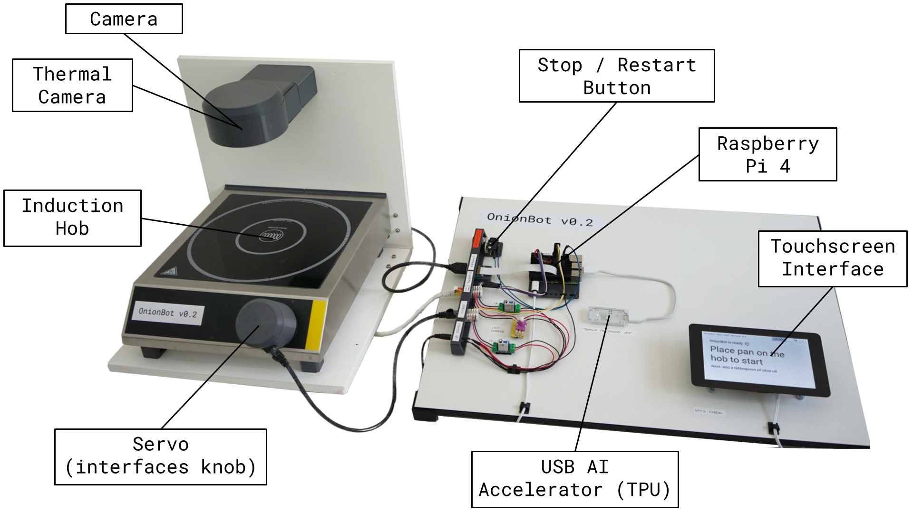

👋 Hey! I’m Ben. I am a technologist, engineer, & designer. I am
currently working on game-changing tech for the recycling industry
@TrueCircle AI. Before that, I studied at Imperial College
London, where, I developed cooking robots and a
tissue characterisation robot, amongst other things! During the
Design Engineering degree, I interned at Google X, Dyson, and
Brompton. I got to work on some
great projects with great people. In my free time, I love
building stuff with friends. Interested in building new things
/ making a positive impact on earth? Say hello!.
TrueCircle AI2021+Design Engineer @ Early-Stage Startup
Launched MVP product in UK facility
Developed 10x more reliable hardware
Implemented roadmap to outsource site work
1 Year+ full-timeTrueCircle HQ, LondonPH et al.TrueCircle AI

TrueCircle AI is a
climate-tech startup developing ground-breaking computer vision
hardware that enables recycling facilities to
recover valuable material more effectively and sell material
more efficiently. We retrofit industrial cameras above conveyor
belts to capture continuous footage of material streams. Our
state-of-the-art model calculates composition by weight in
real-time, to a 95%+ accuracy. We’ve built industry-leading
dashboards that empower facilites to run more efficiently,
preventing recyclable material from going to landfill.



TrueCircle partnered with UK facilites to investigate data-driven
optimisation of recycling processes. A typical TrueCircle AI user is
a Plant Manager who is preocupied with keeping unreliable equipment
running, and doesn't have time to experiment with upgrades to
improve profitability. Our users lacked any data to inform decisions
on upgrading equipment, or calibrate the price of their recycled
material. The existing players in the market couldn't offer a
solution accurate enough to justify their time-consuming and costly
setup process.
I joined as TrueCircle's first full-time hardware engineer. Over the
past year+, we launched a product that can be retrofit in a few
hours, with zero up-front hardware cost for our customers. We send
instant alerts flagging operational issues, and we can verify
material purity with 95+% accuracy in 30+ facilities
internationally. Buyers now trust material quality, leading to a
direct increase in revenue per tonne. TrueCircle has also launched
Trade, an online marketplace that allows Plant Managers to buy and
sell material verified by purity data from our AI vision system, for
the first time.
My responsibilities: Launched TrueCircle’s MVP hardware and led
installation of our initial pilot system at a UK recycling facility.
Outlined a roadmap for reducing failure rate. Implemented a strategy
and led development of new hardware version, resulting in a 10x
reduction in 12-month failure rate, saving £1000s in maintenance
costs. Demonstrated technical leadership; designed and implemented
processes to hand over system installations to a 3rd-party supplier,
proving product scalability; a key requirement for TrueCircle’s
upcoming Series A.
OnionBot2020Design & Build Master's Project
OnionBot
OnionBot
OnionBot
1 Year part-timeImperial College LondonDBOnionBot
OnionBot is a robotic sous-chef that automates simple pan-cooking
tasks, giving you multitasking superpowers that allow you to focus
more on culinary creativity. The project was inspired by a vision
for a robot that can soften the onions while you prepare the next
ingredients. The first OnionBot prototype brings together machine
vision and hobbyist electronics to demonstrate autonomous cooking of
a pasta and tomato sauce recipe - check out the video below! In open
sourcing OnionBot, I hope to inspire a community of collaborators
and early adopters to continue to develop the vision.


Automation technology in the food industry reduces physical and
cognitive demands on production line operators. Perhaps the same
tech could also reduce errors and assist decision-making in home
cooking? How might automation augment the cooking skills of busy
parents and professionals, for example? Kitchens pose very different
design engineering challenges to industry, however, as home cooking
requires multi-purpose tools rather than specialised machines. Robot
arms can mimic human-kitchen interaction, but these are too large
and expensive to be feasible for home use. For multi-purpose
sensing, cameras can detect a wide variety of cooking information,
but there are currently no datasets for training cooking image
classification algorithms. With OnionBot, I wanted to see if there
was a way to integrate industry automation techniques and machine
vision into a simple robot that fits on a countertop.